Transacciones por empresa |
Mediante esta función se definen las principales características de las transacciones internas y los conceptos bajo los cuales se efectuarán los registros contables y la información general para el cliente acerca de su operación con el producto.
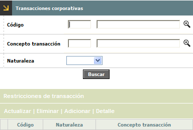
El formulario contiene las opciones Actualizar, Eliminar, Adicionar y Detalle. Adicionalmente, cuenta con un filtro de búsqueda y la opción Restricciones de transacci�n.
Filtro: Se pueden realizar consultas a través de las siguientes opciones:
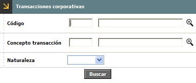
Concepto transacción |
Campo numérico de tres posiciones, en el cual se registra el código que identifica a cada concepto de transacción. |
Transacción interna |
Campo numérico de tres posiciones, en el cual se registra el código que identifica a cada transacción. |
Naturaleza |
Campo que posee lista de valores adjunta de la que debe seleccionarse entre Nulo, Débito o Crédito la clase o naturaleza contable del registro al cual pertenece la transacción, de acuerdo con la manera como debe afectar el saldo del producto. |
Adicionar: Si el usuario invoca la opción Adicionar se despliega un wizard de dos pasos con los siguientes campos.
Primer paso del wizard:
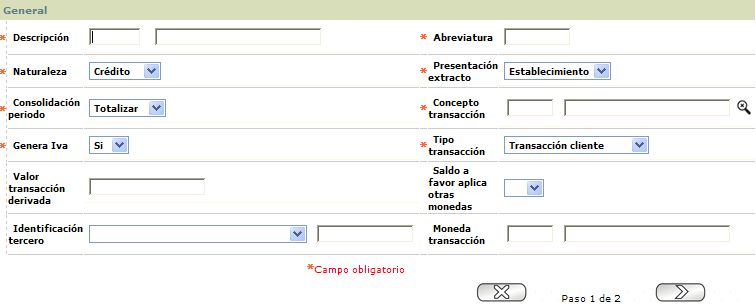
Nombre transacción interna |
Campo alfanumérico de tres dígitos, obligatorio, destinado para identificar a través de un código y una breve descripción el registro de la operación. |
Abreviatura |
En este campo obligatorio se define un nombre corto o mnemónico que permita identificar cada transacción interna especialmente en las consultas o reportes impresos. |
Naturaleza |
Campo obligatorio que posee lista de valores adjunta de la que debe seleccionarse entre débito o crédito la clase o naturaleza contable del registro al cual pertenece la transacción, de acuerdo con la manera como debe afectar el saldo del producto. |
Presentación extracto |
A través de este campo obligatorio, la entidad podrá parametrizar la manera como será presentada la información en el informe del cliente al corte de cada mes, como una transacción del sistema, derivada de otra o a través del establecimiento donde se realizó. |
Reversar antes de (días) |
Este parámetro permite determinar, el plazo máximo (en días) para reversar una transacción a través de una transacción de ajuste. |
Consolidación periodo |
Campo obligatorio que posee lista de valores adjunta y permite definir, la manera como conservará la información al corte del período al cual haga referencia, Individual indica que se mantendrá una a una las transacciones, Totalizar se acumularán en un solo valor las diferentes transacciones idénticas realizadas durante el periodo. |
Concepto transacción |
Campo obligatorio en el que una vez, descrita la forma de presentación en el extracto, la entidad define de igual manera, cómo aparecerá la descripción en dicho extracto por determinada transacción, de acuerdo a la parametrización realizada en la opción Conceptos transacción del grupo de Tablas reservadas del Núcleo. |
Genera iva |
Campo que permite definir si la transacción es generadora o no del impuesto del IVA. |
Tipo transacción |
En este campo se identifica el medio por el cual se generó la transacción, es decir, si corresponde a una transacción original del cliente o a una transacción generada por el sistema. |
Valor transacción derivada |
Cuando una transacción original genera una segunda o derivada, ésta puede implicar un costo adicional para el cliente y en este campo se expresa dicho monto en valor absoluto. Aplica siempre y cuando al momento de parametrizar la transacción original no se le defina valor alguno al campo Monto trx derivada. |
| Saldo a favor aplica otras monedas | En este campo con lista de valores adjunta puede seleccionarse entre Si o No el sistema debe aplicar los saldos a favor generados por pagos en monedas diferentes a la utilizada como patrón, respetando la moneda en la cual se generó. |
| Identificación tercero | El uso de este campo es muy específico, de acuerdo con lo determinado en la opción Parámetros contables; posee lista de valores de la que puede seleccionarse el Tipo de documento de identificación y el número del mismo, correspondiente a quien hace las veces de tercero, permitiendo de esta manera el flujo de la información de una transacción especial hacia una interface. |
| Moneda transacción | Campo con lista de valores de la que dependiendo del valor del campo Concepto Trx se puede seleccionar para aquellas transacciones alternas (Ej: cuota manejo internacional, cuota afiliación) la Moneda en la cual se expresa el valor de la transacción derivada. |
El usuario tiene la opción de Cancelar o Avanzar al segundo paso del wizard a través de los botones ubicados en la parte inferior derecha del formulario.
Segundo paso del wizard:
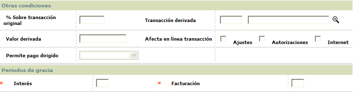
% Sobre transacción original |
Si una transacción original genera una segunda o derivada, ésta puede generar un costo adicional que está expresado por un porcentaje sobre el valor de dicha transacción. Este campo y el anterior (valor trx derivada) son mutuamente excluyentes, es decir, se debe definir una de las dos alternativas para determinar el costo de la transacción derivada. |
Transacción derivada |
Cuando una transacción original genera una segunda, ésta debe ser definida para efectos de liquidación y registro, seleccionándola de la lista de valores poblada a través de esta misma forma o pantalla. |
Mínima para derivada |
En este campo se expresa el monto mínimo que debe tener una transacción original para poder generar una transacción derivada. |
Afecta en línea transacción |
Conjunto de información que muestra la manera cómo será afectado el saldo del producto directamente, objeto de alguna de las transacciones allí definidas. Ajustes / Autorizaciones / Internet: Permite definir para las transacciones marcadas la condición de ser afectadas en línea, es decir, que actualizarán inmediatamente el disponible del producto. |
Permite pago dirigido |
Este campo es obligatorio para las transacciones de naturaleza Crédito y concepto de transacción Pago, permite definir, una vez realizado el pago y de acuerdo con lo aquí definido la manera como será aplicado; asi al seleccionar al cubrir el pago mínimo, indica que del valor que exceda al valor mínimo exigible como pago, podrá ser aplicado a una tarjeta, línea de crédito o transacción específica. Sin embargo, si la elección es sin condiciones; significa que siempre aplicará (aunque sea el valor correspondiente al pago mínimo), a los conceptos a que haya sido dirigido el pago. Si el usuario no selecciona ninguna de las opciones anteriores debe opta por no permitido que impide dirigir el pago y por el contrario aplicará a los conceptos que afectó en el momento de generar el pago mínimo. |
Interés |
Campo destinado para definir, cuántos periodos hacen parte de los tiempos muertos para liquidar intereses a un consumo. |
Facturación |
Campo destinado para definir, cuántas facturaciones hacen parte de los tiempos muertos para hacer exigibles los instalamentos del consumo. |
El usuario tiene las opciones Cancelar, Atrás o Guardar; las cuales podràn ser invocadas a través de los botones ubicados en la parte inferior derecha del formulario.
Actualizar: Si el usuario invoca la opción Actualizar se despliega el primer formulario del wizard, en el cual los únicos campos modificables son: Abreviatura, Naturaleza, Presentación extracto, Reversar antes de (días), Consolidación periodo, Concepto transacción, Genera iva, Tipo transacción, Valor transacción derivada, Saldo a favor aplica otras monedas, Identificación tercero, y Moneda transacción. Adicionalmente, en el segundo formulario del wizard todos los campos son modificables menos 'Mínima para derivada'.
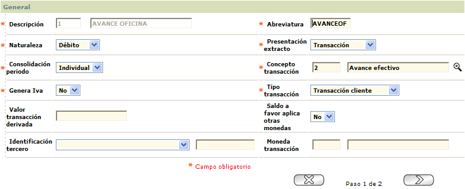
El usuario tiene la opción de Cancelar o Avanzar al segundo paso del wizard, en el cual sólo se podrán modificar los campos...
Detalle: Si el usuario
invoca la opción Detalle se despliega el siguiente formulario:
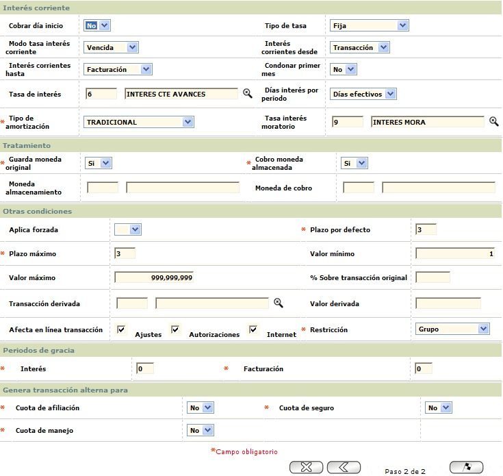
A través de esta opción el sistema permite restringir la aplicación de la transacción según el tipo de Restricción parametrizado: Pueden ser por Establecimiento, Clase de servicio, Cadena y Grupo de establecimiento.
Establecimiento: Esta opción muestra los establecimientos en los cuales esta transacción no puede ser aplicada. El formulario contiene las opciones Eliminar y Adicionar.
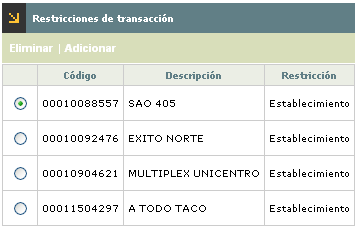
Adicionar: Si el usuario invoca la opción Adicionar se despliega el siguiente formulario:
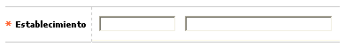
Clase de servicio: Esta opción muestra las clases de servicios que restringen a los establecimientos que pertenecen a ellas. El formulario contiene las opciones Eliminar y Adicionar.
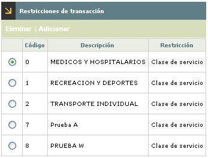
Adicionar: Si el usuario invoca la opción Adicionar se despliega el siguiente formulario:
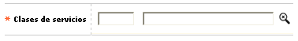
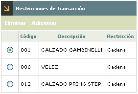
Adicionar: Si el usuario invoca la opción Adicionar se despliega el siguiente formulario:
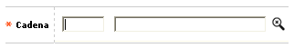
Grupos de establecimiento: Esta opción muestra los grupos de mercadeo que restringen a los establecimientos que pertenecen a ellos. El formulario contiene las opciones Eliminar y Adicionar.
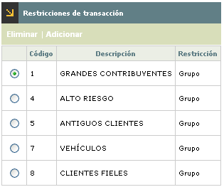
Adicionar: Si el usuario invoca la opción Adicionar se despliega el siguiente formulario: